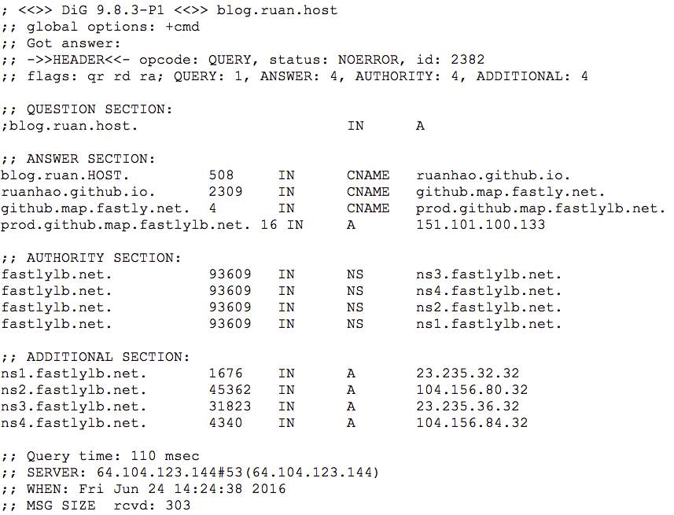

Dig
Table of Contents
| Author | Hao Ruan (haoru@cisco.com) |
| Date | 2018-02-08 10:25:26 |
Table of Contents
1 基本知识
1.1 字段说明

Figure 1: 输出示例
- HEADER
- 查询参数和统计
- QUESTION SECTION
- 查询 blog.ruan.host 的 A 记录
- ANSWER SECTION
- DNS 服务器的答复，508 是 TTL 值，表示 508 秒内不需要再查询
- AUTHORITY SECTION
- 显示 NAME SERVER (NS) 记录，即哪些服务器负责管理
fastlylb.net.的 DNS 记录， 可以向任一台服务器查询prod.github.map.fastlylb.net.的 IP 地址 - ADDITIONAL SECTION
- 显示域名服务器的 IP 地址
1.2 域名层次
HOST.SLD.TLD.root
- SLD: second-level domain
- TLD: top-level domain
2 用法示例
2.1 指定服务器查询
本机 DNS 服务器的 IP 地址保存在 /etc/resolv.conf ， 也可以指定具体的服务器查询：
dig @8.8.8.8 blog.ruan.host
2.2 显示分级查询过程
dig +trace blog.ruan.host
2.3 单独查询每一级域名的 NS 记录
dig ns com. dig ns host. dig ns ruan.host. dig +short ns com. dig +short ns ruan.host.
2.4 反向查询
dig -x 128.199.183.19